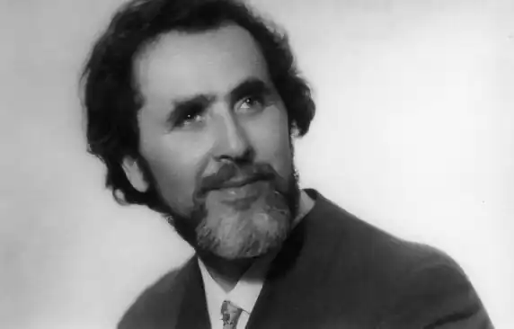
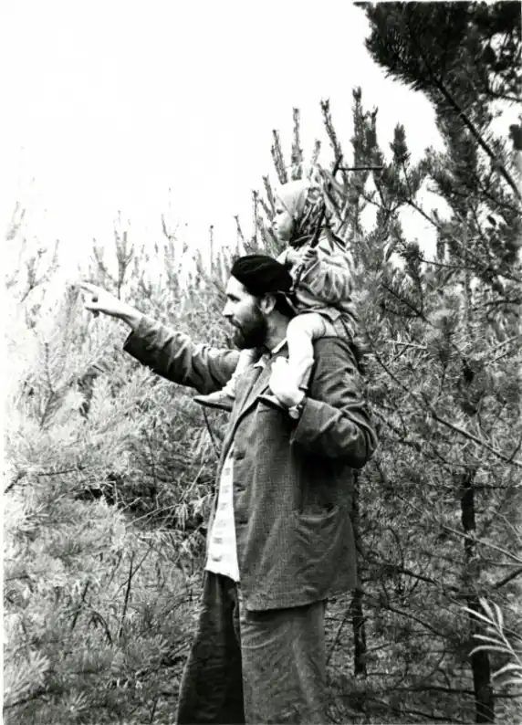
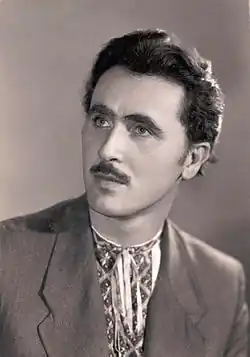

БЕРДНИК Олександр (Олесь) народився 27 листопада 1926 р. в с.Вавилово Херсонської (зараз — Миколаївська) обл. в родині коваля. 1943-45 рр. — участь в бойових діях. 1947-49 рр. — навчання у театральній студії при театрі ім. Івана Франка (м. Київ). 1949 —55 рр. — ув'язнення по статті № 58 КК СРСР ("Антиреволюційна агітація та пропаганда"). 1957 р. — виходить перша книга "Поза часом і простором". Прийнятий до СПУ. 1958-1971 рр. — літературна діяльність. За цей час вийшло 23 твори — науково-фантастичні романи та повісті. Основні: "Стріла часу", "Діти Безмежжя", "Хто ти?", "Подвиг Вайвасвати", "Чаша Амріти", "Зоряний Корсар" (на даний час роман перекладено 26 мовами світу).
1973 р. — виключений зі СПУ. Переслідування з боку КГБ. 1971-1985 рр. — виходять книги за кордоном, зокрема "Зоряний Корсар", "Прометей", "Свята Україна", "Апостол безсмертя" (англійською мовою), "Кажу вам — Священні знаки". 1979 р., 6 березня — заарештований та засуджений до 5 років ув'язнення за ст. 62 — 2 КК УРСР "Участь та діяльність в УГГ". 1984 р. — справа переглядається. Помилування. 1985 р. — виходить роман "Вогнесміх". У цьому ж році прийнятий до СПУ. 1986-1996 рр. — літературна діяльність. За цей час вийшло 11 творів, зокрема "Лабіринт Мінотавра", "Пітьма вогнища не розпалює", "Камертон Дажбога" (продовження "Зоряного Корсара"), "Тайна Христа", "Песнь Надземная" (в-во "София",Київ).
18 березня 2003 року Олесь Бердник пішов з життя. Похований у с. Гребені Київської області, на території своєї дачі.